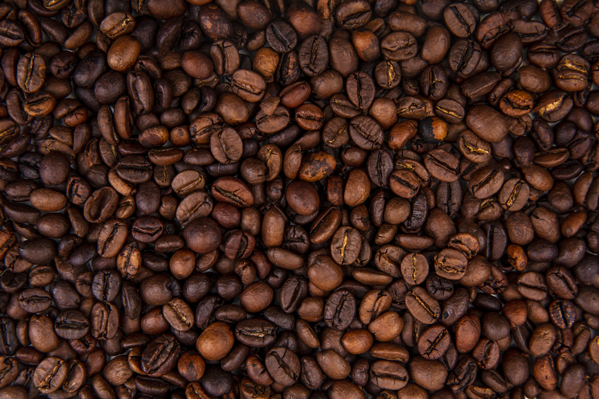

Espresso
Our favourite!
Intense, concentrated shot with a rich crema — bold notes of caramel, chocolate and toasted nuts. Perfect for a quick, strong pick-me-up.
Welcome to Beckett Beans, home of the best coffees on the campus.
We offer a range of coffees, all made while you watch. We use our signature Beckett Roast Beans for the fullest flavour every time.

Our favourite!
Intense, concentrated shot with a rich crema — bold notes of caramel, chocolate and toasted nuts. Perfect for a quick, strong pick-me-up.
Clean, nuanced cup that highlights bright acidity and delicate floral or fruity aromas. Best for single‑origin beans and careful brewing.
Full-bodied brew with a rich mouthfeel — oils and sediment create deeper chocolate and spice notes for a hearty cup.
Smooth, low-acidity concentrate steeped cold — mellow sweetness with nutty and chocolate undertones. Serve chilled over ice.